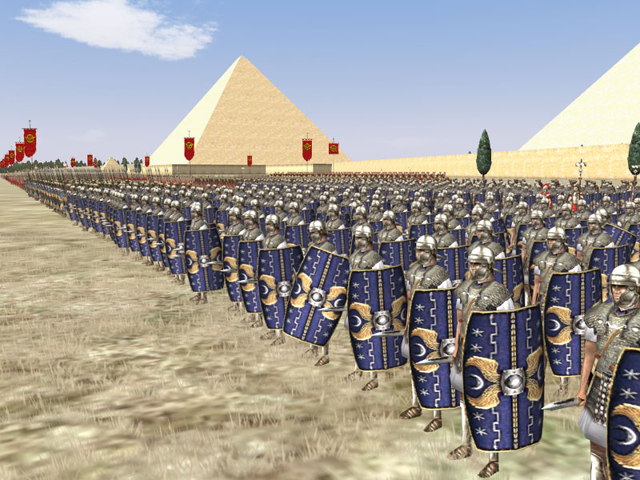

This page will always show the most recent post
Rome: Total War (Europa Babarorum Mod)

So finally got this famed mod for RTW over the weekend. It took me a little bit to get used to all of the new units.
I really enjoyed the change to turns to be seasons instead of half a year. Made it a little slower paced and more interesting.
The units all look appropriate for the game and the addition of accurate unit shouts helped me get immersed that much quicker.
The actual combat felt weighty and much more appropriate that it used to. Heavy skirmishers felt like they were heavily armored unlike before.
Overall I really enjoyed this mod for one of my favourite older games, glad to see such dedication from fans to expand upon the game to make it more
historically accurate. I will have to try the second version of this mod that uses Medieval 2: Total War as the base.